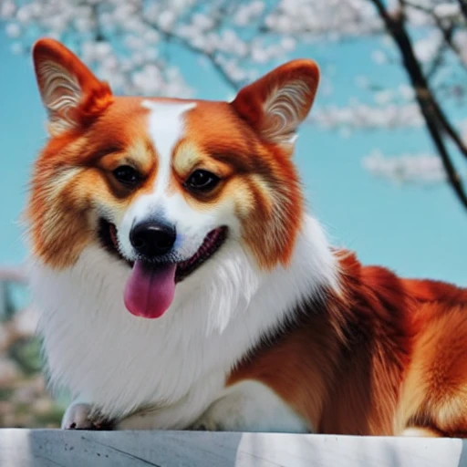
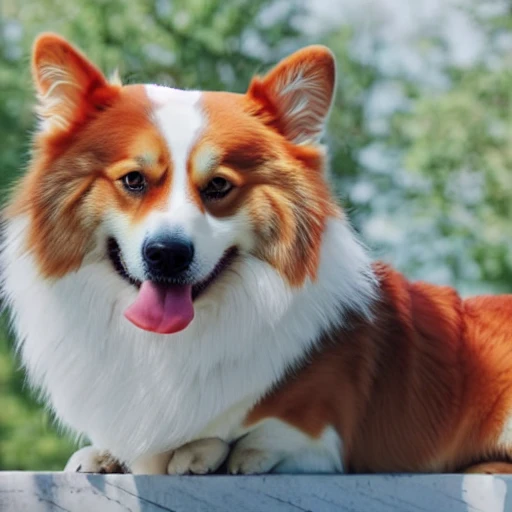

ΔW = Wft − W0
Isolate the update
Start with a personalized checkpoint and its original frozen base.
PERSONALIZED DIFFUSION · POST-HOC COMPRESSION
Delta-SVD compresses the weight updates of personalized text-to-image models into compact low-rank factors. No retraining. No subject images.
Efficient Compression for Personalized Text-to-Image Models

Full checkpoint
Delta-SVD 151 MiB*Keep the directions
that carry the change.
Per-subject adapter at the quality knee
Of full-model mean DINO, over 30 subjects
Training steps during compression
01 / THE IDEA
A finished checkpoint already contains the learned subject. Subtract the base, compress the difference, and merge it back when loading.
Start with a personalized checkpoint and its original frozen base.
Factor each layer’s delta with singular value decomposition.
Select ranks with a threshold, fixed rank, or global byte budget.
Reconstruct weights once at load time; keep the original inference graph.
A rank-r matrix update stores r(m + n) factor values. The savings are in stored personalization artifacts; the reconstructed model still uses dense weights at inference.
02 / MEASURED RESULTS
SD-v1.5 on 30 DreamBooth subjects, with five generated images per subject and variant. DINO measures similarity to subject reference images.
Size in MiB · logarithmic axis · select a threshold below
| Method | Stored size (MiB) | Mean DINO ↑ | Artifact |
|---|---|---|---|
| Full personalized model | 4,993.9 | 0.7073 | Full checkpoint |
| Delta-SVD · t = 0.5 | 708.3 | 0.7060 | Delta factors |
| Delta-SVD · t = 0.2 | 150.9 | 0.6950 | Delta factors |
| Dense-delta int4 | 411.4 | 0.7073 | Quantized delta |
Delta artifacts require a shared base. The full-checkpoint size includes pipeline components, so these are measured artifact sizes, not component-matched compression ratios. Score retention is a ratio of means, not a percentage of subjects passing an identity test.
03 / LOOK CLOSER
Compare selected outputs with the same subject, prompt, and image index. Move the divider to inspect differences as the adapter becomes smaller.
YOUR COMPARISON
Dog · t = 0.2 · 150.9 MiB mean artifact size
Aggressive truncation can change identity and shape. These examples illustrate the trade-off; the quantitative results aggregate all 30 subjects.
04 / SCOPE & GENERALIZATION
On 12 fully fine-tuned SD3.5-medium subjects, a 31.2 MB adapter achieves mean DINO 0.7345, compared with 0.7427 for the full personalized model.
SD3.5-medium · full fine-tuning · 12 subjectsThe reported t sweep uses cumulative singular values (Σσ), not squared spectral energy (Σσ²). Budget allocation uses a spectral proxy; greedy allocation is not generally optimal for heterogeneous integer budgets.
Factors merge into the original dense network at load time. This preserves the computation graph, but does not imply lower runtime VRAM or exactly identical timing. SDXL and FLUX experiments use merged LoRA checkpoints and are separate from full-fine-tuning evidence. Architecture and recipe differences prevent a scaling-law claim.
The page uses the project’s SD-v1.5 aggregate and per-subject tables and the 12-subject SD3.5 table. The bootstrap resamples subjects in pairs (20,000 draws, seed 20261003). SD-v1.5 uses MiB; SD3.5 uses decimal MB.
Download evidence metadata ↗TAKE A CLOSER LOOK
Download the A0 poster or explore the measured results.